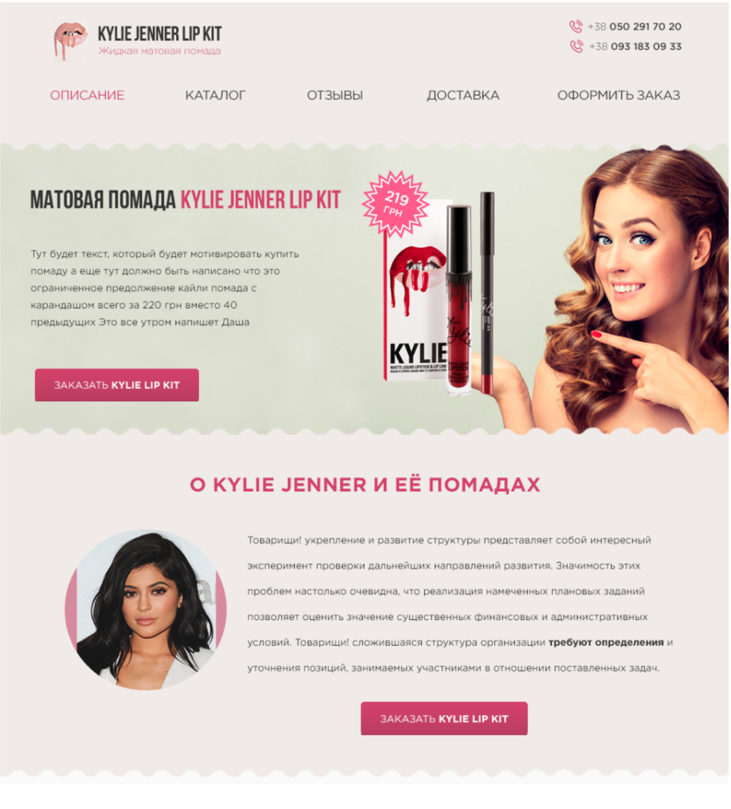
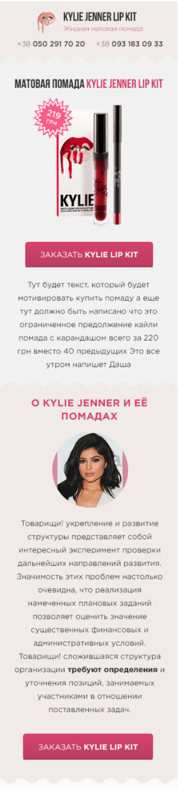

(!) Домашне завдання потрiбно здавати у вигляди сторiнки GITPAGES
- Сверстать адаптивный мини-сайт для продажи помад Kylie
- Ссылка на макет 1554px
- Ссылка на макет 1024px
- Ссылка на макет 380px
- Максимальная ширина должна быть ограничена 1554px, всё что выше – цвет фона согласно макету
- Все ссылки при наведении становятся розового цвета (см. ссылку описание в макете)
- Подчёркнутая (!) только активная ссылка
- При наведении на кнопку заказа, нижний (едва заметный темно-малиновый) бордер – должен стать такого же цвета как и кнопка. Представьте себе реальную кнопку, которую нажимают и она становится плоской
- Фон для цены – это картинка, не пытайтесь самостоятельно делать фигуру.
- Текст – это рыба, сильно не придирайтесь 🌝
- Волнистую линию можно сделать вырезав маленькую png с дугой и использовав свойство background-repeat
- Шрифт качать отсюда, забейте, вас не посадят (может быть).
- Знаю, вы все-равно будете спрашивать что-то ещё поэтому просто тегните в телеграме в общем чате группы: @trostinsky
- Ссылка на список всех CSS-свойств.
- Дополнительное задание: для тех кому мало – нужно сверстать ещё один адаптивный макет: Desktop Mobile
- Промежуточное состояние между по дополнительному макету – "на ваш розсуд"
- P.S знаю у вас у многих будет вопрос по тому где брать фотошоп и так далее: Можно тут резать макет

Макет на 1554px

Макет на 1024px см. iPad в горизонтальном

Макет на 380px см. iPhone 6/7/X/XS etc.